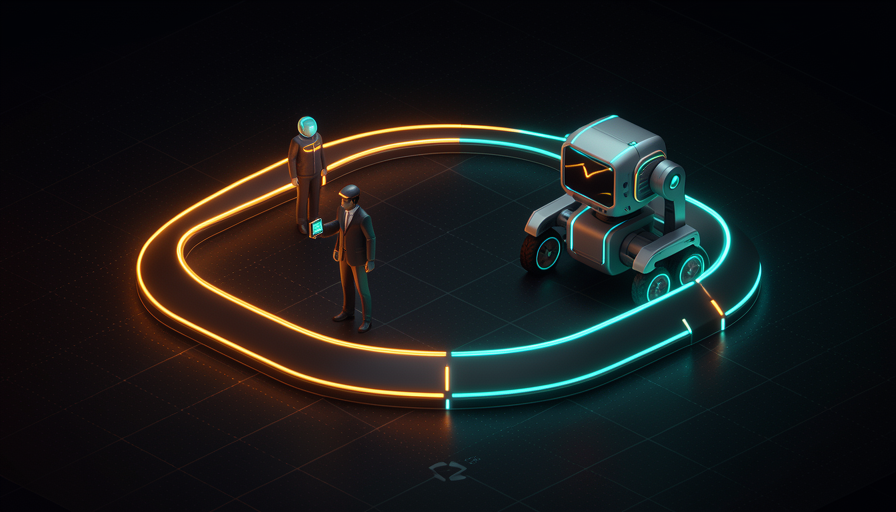

📖 Glossário vivo (leia antes — volte sempre que precisar)
Esta é a trilha Avançado. Você já conhece modelo, agente, skill e harness (Trilha 1). Aqui entram os termos novos sobre como você se posiciona em relação ao agente — fixe estes:
🤝 Human-in-the-loop
🧠 Imagine assim: você está ensinando alguém a dirigir. No começo, fica no banco do carona com o pé perto do freio: a cada curva você confere, comenta, corrige. Você está dentro do processo, junto, pronto pra intervir. Esse é o modo "humano no loop".
Quando você usa um agente de IA pra programar, a forma mais comum — e a que todo iniciante usa primeiro — é o human-in-the-loop (humano no loop). Você fica junto do agente: ele propõe uma mudança, você lê, aprova ou corrige; ele roda um comando, você confirma; ele edita um arquivo, você revisa. Você está dentro do loop de execução, no comando o tempo todo.
Esse modo é certo em muitos momentos — não é "errado", é uma das duas marchas. Pocock é claro sobre quando ele faz sentido: planejar, implementações complexas e trabalho não-escopado (ou seja, quando ainda não está definido o que exatamente fazer). Nessas horas você quer estar ali, dando direção, porque o agente sozinho ainda não tem o que precisa pra acertar. O porquê é simples: enquanto a tarefa é ambígua, sua presença no loop é o que evita o agente sair construindo a coisa errada com muita confiança. O erro comum é o oposto: ficar no loop para tudo, inclusive tarefas já bem definidas e repetitivas — aí você vira o gargalo do seu próprio trabalho.
No human-in-the-loop, cada passo passa por você antes do agente seguir.
⚠️ Erro comum de iniciante
Achar que human-in-the-loop é "o jeito seguro e único" de trabalhar. Ele é necessário no incerto — mas se você nunca sai do loop, sua velocidade fica presa à velocidade dos seus cliques de aprovação. Você nunca colhe a vantagem real do agente.
Em 1 frase: human-in-the-loop é você no banco do carona, aprovando cada curva — essencial quando a estrada ainda não está clara.
Indo mais fundo (opcional): por que "loop"?
Um agente trabalha em ciclos: ele pensa, age (edita um arquivo, roda um teste), observa o resultado e repete — isso é o "loop" do agente. "Humano no loop" significa literalmente inserir você dentro desse ciclo, como mais uma etapa de checagem entre o "agir" e o "repetir". "AFK" é o mesmo loop rodando sem essa etapa humana. A pergunta avançada não é "loop ou não loop", e sim "quanto de você o loop precisa".
🛰️ O que é AFK
🧠 Imagine assim: voltando à direção — chega a hora em que você sai do carro, dá o endereço e deixa a pessoa ir sozinha buscar o pão. Você não acompanha cada semáforo. Você dá uma tarefa clara e vai fazer outra coisa. Quando volta, o pão está na mesa.
AFK quer dizer Away From Keyboard — "longe do teclado". É o oposto do human-in-the-loop: em vez de aprovar passo a passo, você dispara o agente numa tarefa específica e vai embora. Como Pocock descreve, o AFK "remove você da equação": o agente pega a tarefa e simplesmente faz, do início ao fim, sem te interromper.
A condição para isso funcionar é a tarefa estar bem escopada — definida o suficiente pra não precisar de você no meio. Foi por isso que ele diz não pensar tanto em "rodar como loop infinito", e sim em "só preciso do agente AFK pegar uma tarefa específica e fazer". O porquê de AFK ser tão poderoso: enquanto o agente trabalha sem você, seu tempo fica livre — pra planejar a próxima coisa, revisar outra, ou disparar outro agente. O erro comum é tentar mandar AFK uma tarefa vaga ("melhore o app"): sem escopo, o agente vagueia, e você descobre o estrago só quando volta. AFK não é mágica — Pocock avisa que "dá um pouco de trabalho pra configurar, mas depois vai longe".
Recuperação rápida: o que significa AFK no contexto de agentes?
Em 1 frase: AFK = dar uma tarefa clara, sair do teclado e voltar com ela pronta.
🔓 O destravamento do AFK
🧠 Imagine assim: imagine contratar seu primeiro funcionário de confiança. Antes, tudo passava pela sua mão. Depois, você delega e descobre que pode tocar três projetos ao mesmo tempo. Não foi você que ficou mais inteligente — foi você que saiu do gargalo. O AFK é esse momento.
Esta é a frase central do módulo, direto de Pocock: "o momento em que descobri o AFK foi o momento em que eu realmente entrei na programação com IA." Repare na força disso — ele não diz "quando troquei de modelo" nem "quando aprendi a fazer prompt". O destravamento não veio do motor (o modelo); veio de uma mudança no harness e na forma de trabalhar: tirar a si mesmo do caminho.
Por que isso destrava tanto? Porque enquanto você está human-in-the-loop, você é o limite de velocidade. Cada aprovação sua é um pedágio. Por mais rápido que o agente seja, ele anda na velocidade dos seus cliques. No momento em que o agente passa a tocar tarefas escopadas sozinho, esse pedágio some — e, mais importante, libera você pra disparar outro agente. É aqui que nasce o "dois, três, quatro de você" (tópico 6). O erro comum é confundir o destravamento com "comprar um modelo melhor": o ganho de Pocock não foi de inteligência bruta, foi de posicionamento — ele parou de ser o gargalo. Lembre da Trilha 1: o salto está no chassi, não no motor.

O destravamento não é um modelo melhor — é você deixar de ser o gargalo.
Em 1 frase: o AFK destrava porque você para de ser o limite de velocidade do seu próprio trabalho.
🎚️ Quando ficar no loop
🧠 Imagine assim: um cirurgião delega o curativo e o transporte do paciente — mas a incisão principal ele faz com a própria mão. Saber o que delegar e o que segurar não é fraqueza: é o que separa o profissional do amador.
AFK não é "largar tudo pra IA pra sempre". É uma marcha que você engata na hora certa — e human-in-the-loop é a outra. A regra de Pocock é direta. Você fica no loop quando o trabalho é: planejamento (decidir o que e por quê), implementações complexas (onde uma decisão errada cedo contamina tudo) e trabalho não-escopado (ainda mal definido, onde sua direção é o que dá forma). Você manda AFK quando a tarefa já está clara, delimitada e tem como verificar o resultado.
O porquê dessa divisão é a mesma lógica de delegar a um júnior (Trilha 2): você desenha as partes difíceis e a interface, e delega a execução escopada. O movimento estratégico — que você vai revisitar em "Checkpoints & review fluido" (4.6) — é "empurrar os checkpoints human-in-the-loop cada vez mais pra perto da saída final": em vez de aprovar cada passinho, você aprova só no fim, quando faz diferença. O erro comum aqui é binário-demais: gente que ou fica colada no loop pra tudo, ou solta AFK em coisas que ainda não estão escopadas. A habilidade é dosar.
🔬 Exemplo resolvido: uma feature, duas marchas
Tarefa real: "adicionar exportação de relatório em PDF ao app". Veja como Pocock dividiria isso entre as duas marchas:
- No loop (você junto): sentar com o agente e decidir o que entra no PDF, qual biblioteca usar, como fica o layout, onde encaixa no menu. Trabalho não-escopado e de design — sua direção molda tudo.
- AFK (você sai): agora a tarefa está clara — "implemente o botão Exportar PDF usando a lib X, no padrão de auth do projeto, com testes". Você dispara e vai almoçar.
- Checkpoint no fim (loop, na saída): ao voltar, você revisa o PR — não cada commit, só o resultado. Checkpoint empurrado "pra perto da saída final".
Resultado: você gastou seu tempo só onde sua cabeça importava (decisão + revisão final) e deixou a execução escopada rodar sozinha.
Em 1 frase: fique no loop para decidir e desenhar; mande AFK para executar o que já está claro — e revise só na saída.
🔐 Permissões e fricção
🧠 Imagine assim: dar a chave do carro a alguém. Se a cada esquina a pessoa precisa te ligar pra perguntar "posso virar?", a viagem não anda. Mas se você dá a chave de um carro num estacionamento fechado, pode soltar — o estrago possível é pequeno. Permissão + ambiente seguro andam juntos.
Pra um agente trabalhar AFK, ele não pode ficar parando a cada passo pedindo autorização. Cada pausa dessas é fricção, e fricção te prende ao teclado — o oposto de AFK. A solução é dar permissões mais amplas, pra ele agir sozinho. Mas aí mora um perigo real.
Pocock é explícito sobre o risco: um agente solto, sem um ambiente isolado, pode "deletar seu diretório home ou exfiltrar suas variáveis de ambiente" (vazar suas senhas e chaves). Por isso permissão ampla anda de mãos dadas com o sandbox (você verá isso no módulo 4.2): você libera o agente dentro de um ambiente isolado (Docker/Podman ou sandboxes na nuvem), onde, mesmo que algo dê errado, o estrago fica contido. O porquê: AFK exige menos fricção (mais permissões), e menos fricção só é seguro com mais isolamento. O erro comum, e perigoso, é fazer só metade: dar permissão total ao agente na sua máquina real, sem sandbox. Aí você trocou fricção por risco de catástrofe.
Antes de dar mais PERMISSAO e soltar o agente AFK, cheque: [ ] ESCOPO -- a tarefa esta clara o bastante pra rodar sem mim? [ ] SANDBOX -- o agente esta num ambiente isolado (Docker/Podman/nuvem)? [ ] SEGREDOS -- minhas chaves e .env estao fora do alcance dele? [ ] VERIFICACAO -- existe teste/check que diz se ele acertou? [ ] SAIDA -- o resultado sai como PR/branch (nao direto no main)? Se algum [ ] esta vazio, NAO solte na maquina real. Sandbox primeiro.
Em 1 frase: reduza a fricção dando permissões amplas — mas só dentro de um sandbox, nunca solto na máquina real.
👥 Dois, três, quatro de você
🧠 Imagine assim: um maestro não toca os instrumentos — ele rege vários ao mesmo tempo. Cada músico (agente) executa sua parte sozinho; o maestro (você) garante que tudo soa junto. Não é uma pessoa fazendo tudo; é uma pessoa multiplicada.
Aqui o AFK mostra seu maior efeito. Quando você não precisa ficar no loop de cada agente, pode rodar vários ao mesmo tempo — é o que Pocock chama de ter "dois, três, quatro, cinco de mim". Cada agente AFK pega uma tarefa escopada e roda em paralelo; você deixa de ser uma pessoa fazendo uma coisa e vira uma pessoa orquestrando várias. É exatamente por isso que o destravamento do tópico 3 importa tanto: tirar-se do gargalo é o que permite a multiplicação. Como Pocock resume, o AFK "é simplesmente incrível — dá um pouco de trabalho pra configurar, mas depois vai longe". A parte de "configurar" é o sandbox e a fila de tarefas — exatamente o que os próximos módulos desta trilha destrincham (4.2 sandboxes, 4.3 GitHub Actions, 4.4 filas). Você não vira o gargalo dos seus agentes; você vira o maestro deles.
"Dois, três, quatro de mim" — você rege vários agentes em paralelo, cada um na sua tarefa.
Recuperação rápida: o que torna possível ter "dois, três, quatro de você"?
Em 1 frase: sair do loop te multiplica — de uma pessoa fazendo uma coisa para um maestro regendo vários agentes.
🧾 Resumo do Módulo
Próximo módulo:
4.2 — Paralelizar & sandboxes: o "como" do AFK seguro — Docker/Podman, Sand Castle e rodar uma frota de agentes isolados.